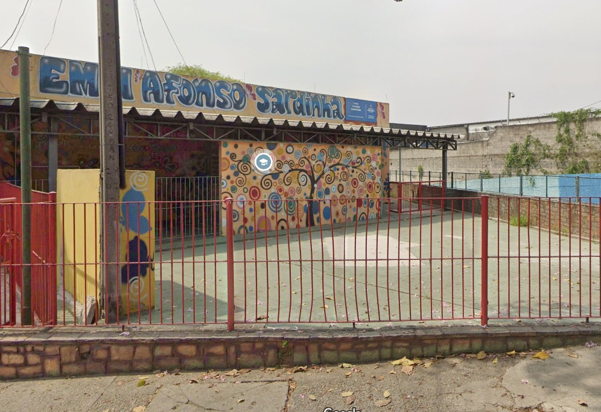

E.E Júlio Cesar de Oliveira
A escola Júlio Cesar de Oliveira, é uma da melhores escolas públicas de Pirituba, embora contendo apenas o Ensino Fundamental I, ou seja, indo do 1° ano até o 5° ano.
Tem ótima avaliação no Google. Conta com uma diretora que tem mais de 30 anos de experiências, e ótima interação pedagógica com os alunos. É uma boa escola caso não queira gastar dinheiro com educação, mas continuar com uma relação boa entre gastos e educação.
EMEI Afonso Sardinha
A Escola Municipal de Educação Infantil (EMEI), é outra opção gratuita para a educação para crianças de até 6 anos. Tem ótima avaliação no Google, fundada a mais de 10 anos e é bem concorrida pelos pais da região que almejam colocar seus filhos lá.
É bem conhecida por insativar a criatividade dos alunos com gincanas, bricadeiras, desafios, atividades extras etc.
É localizada na Av. MUTINGA, 1406 PIRITUBA. 05110-000 São Paulo - SP.
Referências
Objetivo do site
Esse site tem como objetivo facilitar o conhecimento agrupado do bairro de Pirituba, e tornar esse agrupamento de informações acessíveis para as pessoas
Ⓡ Samuel Max. Todos os direitos reservados

Samuel Max O. Silva
max.xpn
im.smax